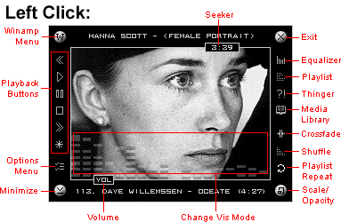
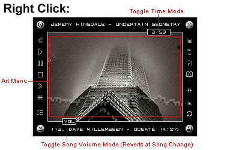
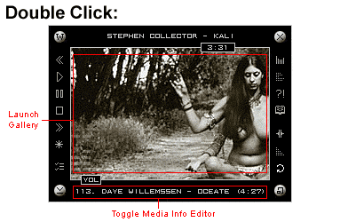

|
| Artzar Winamp3 Skin Version 1.0 | |
|
This is the official skin of Artzar.com. It showcases our best visual art with a slideshow of 30 images taken from 16 different galleries. Components are fully skinned, and feature graphics adopted from the landscape paintings of Barbra Fuoco. Controls and titles hide when your mouse is elsewhere to create a clean look (can be disabled in options menu to improve performance). Enjoy a random progression of images (also controled in the options menu), or choose your favorite by right clicking in the slideshow area. Double click on an image to launch the Artzar gallery from which it was taken. Want to turn up a good song or turn down a loud file? Right click on the volume slider to change the level for just the current song. If you want a Winamp experience that looks as appealing and artistic as your music sounds, then you will enjoy this skin.
Want to customize this skin with your own images? Read the Skin Customization Instructions. |
 |
|  | |
|  | |